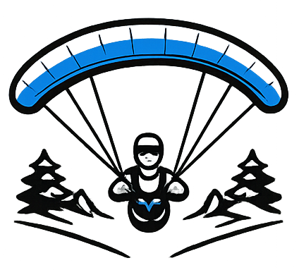
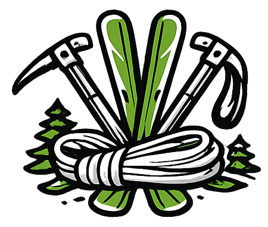

Mountain rescue volunteer, paraglider pilot, and ski mountaineer. The mountains are where I recharge — whether responding to emergencies or exploring new routes with my family.
Many years of experience across different mountain disciplines — skiing, mountaineering, and paragliding — have shaped who I am. In 2019, I became an active mountain rescuer with Bergwacht Bayern, adding structured medical training to my alpine skillset.
I enjoy these activities not only for myself but especially with others — and helping those in emergency situations. The tactical component of mountain rescue in time-pressure scenarios brings benefits to other stressful situations in professional and personal life.
Active since 2019
Paramedic SAN A/B

Alpine flying

Multi-discipline athlete
I'm an active volunteer in the Bavarian Mountain Rescue Service (Bergwacht Bayern), one of the most experienced mountain rescue organizations in Europe. As a certified paramedic (SAN A/B), I respond to alpine emergencies including climbing accidents, avalanche incidents, and mountain hiking injuries.
The work combines my passion for the mountains with the opportunity to give back to the alpine community. It requires continuous training in emergency medicine, rope rescue techniques, avalanche rescue, and winter operations.
Before joining mountain rescue, I was actively involved with Technology Without Borders (Technik ohne Grenzen), leading projects that brought engineering solutions to developing regions.
Have a great mountain tour to recommend? Leave your suggestion below.
Loading chart…
Questions about ski touring, gear, or staying safe in the Alps? Have a chat.
Powered by Claude. Not a substitute for a current avalanche bulletin.
Want to connect about mountain sports, rescue volunteering, or outdoor adventures? Drop me a line.